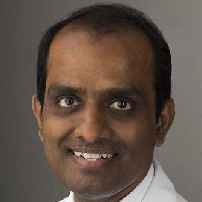

Dr. Bala Subramaniam
Director, Sadhguru Center for a Conscious Planet · Harvard University
Tap to learn moreDr. Bala Subramaniam
His work investigates the intersection of consciousness, meditation, and human performance. Through interdisciplinary research and dialogue, he explores how contemplative practices influence cognition, health, and leadership.
Tap to flip back